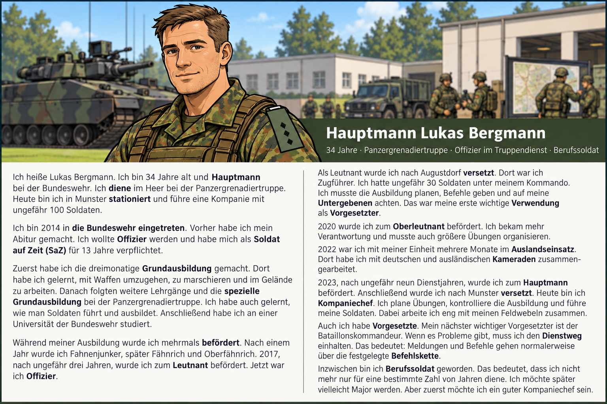

Mein Werdegang bei der Bundeswehr
Lesen Sie den Lebenslauf von Hauptmann Lukas Bergmann.

Darunter finden Sie den vollständigen, gut lesbaren Text. Bei den Aufgaben können Sie das Lesebild jederzeit über die Schaltfläche „Lesetext anzeigen“ öffnen.
Übung 1 – Wortschatz
1A – Wörter zuordnen
Ordnen Sie die Wörter den passenden Erklärungen oder Beispielen zu. Ziehen Sie die Wörter in die Felder. Auf dem Smartphone können Sie zuerst ein Wort und danach das Feld antippen.
1B – Das richtige Wort auswählen
Lesen Sie die Erklärungen und wählen Sie das passende Wort aus dem Dropdown-Menü.
1C – Das richtige Wort schreiben
Ergänzen Sie die Sätze. Achten Sie auf die richtige Groß- und Kleinschreibung.
Übung 2 – Leseverstehen
2A – Die Karriere in die richtige Reihenfolge bringen
Bringen Sie die Stationen aus Lukas' Karriere in die richtige zeitliche Reihenfolge. Beginnen Sie mit dem frühesten Ereignis.
2B – Richtig oder falsch?
Lesen Sie die Aussagen. Entscheiden Sie, ob sie richtig oder falsch sind.
2C – Multiple Choice
Lesen Sie die Fragen. Wählen Sie jeweils die richtige Antwort. Nur eine Antwort ist richtig.
Übung 3 – Sprache und Kommunikation
3A – Zeitangaben
Ergänzen Sie die Sätze mit der passenden Zeitangabe oder Präposition.
3B – Interview mit Hauptmann Bergmann
Teil 1: Die passende Frage auswählen
Lesen Sie die Antworten. Welche Frage passt am besten? Wählen Sie A, B oder C.
Teil 2: Fragen selbst formulieren
Lesen Sie die Antworten von Hauptmann Bergmann. Schreiben Sie jeweils eine passende Frage in einem vollständigen Satz. Vergleichen Sie anschließend Ihre Fragen mit den Beispielen und besprechen Sie sie im Unterricht.